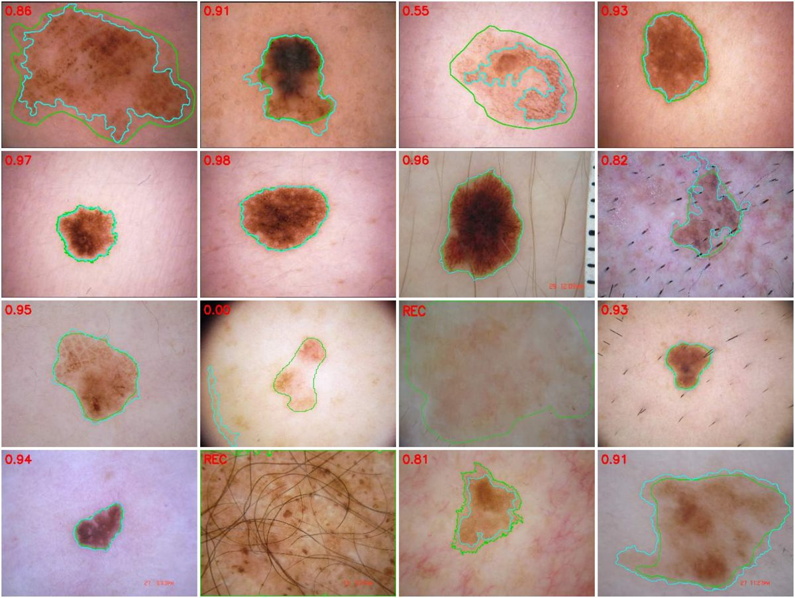

PREPRINTS · DE OLHO NA PELE
A borda está na imagem
Uma regra escrita em linguagem clínica, sem treinamento e sem rede neural, congelada antes do teste, que diz quando não consegue medir.
Pintas e manchas · 07/10/2026
The border is in the image: a clinician-written, training-free rule delineates pigmented skin lesions in a pre-registered blind test of 1,000 dermoscopic images.
doi:10.5281/zenodo.23223877
Teste cego com 1.000 imagens do ISIC 2018, rodada única: Dice mediano 0,88 (recusas contadas como zero), contra 0,70 da limiarização de Otsu. Na métrica oficial do desafio ainda fica abaixo das redes neurais, e o artigo diz isso. A ferramenta de pintas não roda nesta página.

Ferida em modelo suíno · 30/09/2026
A borda da ferida existe na fotografia
doi:10.5281/zenodo.23062849 · a demonstração abaixo roda a regra deste estudo.